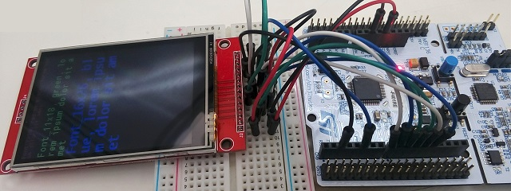
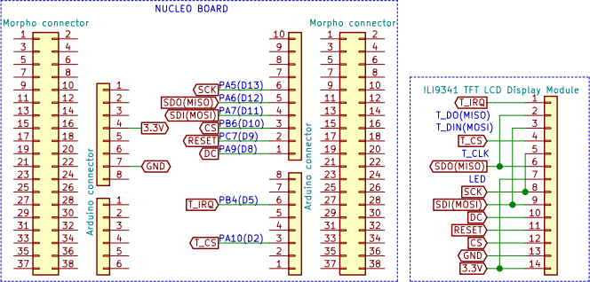

STM32 SPI接続タッチパネル付ディスプレイを使う
2019年08月14日 カテゴリー：STM32

Amazon等で取り扱いがある、320×240ドットのSPI接続タッチパネル付2.8インチディスプレイモジュールを使ってみます。前回とは違うILI9341という制御ICです。
Nucleoボードとディスプレイモジュールとの接続は下図の通りです。消費電流は実測50mA程度でした。

※電源に5Vではなく3.3Vを供給する場合は、モジュール裏面のジャンパー(J1)を繋ぎます。最初気づいていませんでしたが、一応動作していました。
＜STM32CubeIDE（1.0.2） iocファイル Pinout & Configurationタブ＞
・右側列 IC画像
設定済ピンを変更しておく
(21)-PA5 : SPI1_SCK
ピン設定
(38)-PC7 : GPIO_Output
(42)-PA9 : GPIO_Output
(43)-PA10 : GPIO_Output
(56)-PB4 : GPIO_Input
(58)-PB6 : GPIO_Output
左側列のConnectivity→SPI1を開く
・中央列上側 Mode
Mode : Full-Duplex Master
・中央列下側 Configuration→Parameter Settingsタブ
Data Size : 8 bits
Prescaler (for Baud Rate) : 64 ※通信がうまくいかない場合は値を大きくして速度を落とします。
＜STM32CubeIDE（1.0.2） main.cファイル他＞
下記ページのライブラリを利用します。
github.com/afiskon/stm32-ili9341（右側の[Clone or download]ボタンから全ファイルをダウンロードできます。）
Lib/ili9341フォルダ内の7ファイルを自分のプロジェクトの各フォルダへコピーします。
Incフォルダ→fonts.h ili9341.h ili9341_touch.h testimg.h
Srcフォルダ→fonts.c ili9341.c ili9341_touch.c
STM32F3シリーズのNucleoボードを使う場合、ili9341.cとili9341_touch.c最上部に記載されている"stm32f4xx_hal.h"を"stm32f3xx_hal.h"へ変更します。STM32F4シリーズの場合は、そのままでOKです。使用するGPIOピンはili9341.hとili9341_touch.hに#defineで定義されています。
ライブラリのmain.cから以下の3箇所のコードを自分のプロジェクトのmain.cへコピーします。
/* USER CODE BEGIN Includes */〜/* USER CODE END Includes */
/* USER CODE BEGIN 0 */〜/* USER CODE END 0 */
/* USER CODE BEGIN WHILE */～/* USER CODE END WHILE */
実行しディスプレイに画像等が表示されれば成功です。最後の黒い画面ではタッチパネルのテストができます。前回のディスプレイは描画した後毎回画面を更新していましたが、今回はその必要はありません。